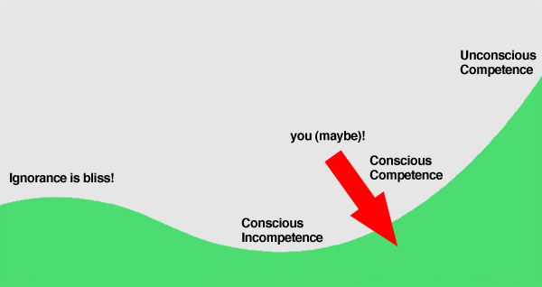

Where You Are In The Dip
“If a hundred-foot oak tree had the mind of a human, it would only grow to be ten feet tall!” - T. Harv Eker
I’m not going to tell you what it means to get out of the dip, because you probably already know that. I will tell you where I think you probably are in the dip, that way you know how to get out (and how close you are to getting out). Just knowing information like that is so helpful, I think. When you’re studying on your own, no guidance whatsoever, the dip is really scary. You have no idea if there’s an end in sight, and it feels like you aren’t making progress (you are, it’s just hard to know it). I’m just going to estimate where I think you probably are. You might be super incredible, and already feel like you’re way out of the dip. If so, that’s great! For the normal person though, read on.

At this point, I’m guessing you’re somewhere between Conscious Incompetence and Conscious Competence. Let’s take a look at what these things mean, in relation to where I’m assuming you are at.
Ignorance Is Bliss!
This is when you first start out, when you don’t know what you don’t know, and everything you do feels like forward progress. Every vocab word, every grammar point, every overarching concept… all progress. You’re learning a lot of new things quickly, and it feels great (that’s why the dip is higher in the beginning).
Conscious Incompetence
This is where you become conscious of what you don’t know. You’ve become good enough to know what you aren’t very good at (totally normal to have things you’re not good at, don’t feel discouraged!) and what you need to get better at. This is a lot of Season 2 (probably the first 3/4 of it). The thing is, you’re much better at Japanese than you were in Season 1. The only issue is that now you’ve gotten good enough to know that you could be a lot better. Learn to embrace this feeling – it just means that you’ve gotten good at learning Japanese. Don’t mistake it for feeling like you don’t know what you’re doing. It just means you’re finally getting good.
Conscious Competence
This is where you’re trying to head with Season 3. Near the end of Season 2, I imagine you’re starting to make the climb out of the deepest, darkest areas of the Dip. You’ve had a little extra time to study your vocab, which hopefully means you’ve caught up on that at least a little bit. You’ve also learned all the basic foundation things (how to use nouns, adjectives, and verbs), and just started using those foundation things to learn other things that build off of them. I don’t (think) you’re out of the dip yet, but you should be starting. If you don’t feel like you’ve started this climb, try focusing on your vocabulary and make sure you’re caught up there.
By the end of Season 3, the goal is for you to reach “Conscious Competence” where you know all your basics down pat, and everything you learn builds off of them.
Unconscious Competence
This is a ways off – I’d say this is what would be considered “advanced” level Japanese. Season 3 will try to get you to a point where you’re at “Conscious Competence” (or get you close). Seasons 4 and 5 will get you to unconscious Competence where you don’t even have to think about how good you are anymore. It’s not like you’re perfect at Japanese or anything at this point, but you know what to study, how to study it, and what to do. Basically, you’re really good at learning Japanese by now, due to all that learning Japanese practice you’ve done up to this point. Learning Japanese, on its own, has intrinsic value. This part of the Dip is awesome, and it only keeps getting better.